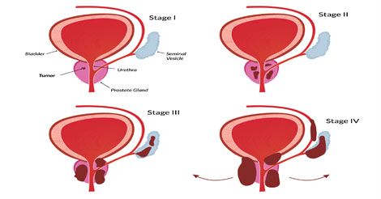

Del editor: Si tienes una inflamación de próstata o sospechas que la tienes, a continuación encontrarás las recomendaciones de un reconocido especialista. ¡Hay un remedio eficaz que puede ayudarte! No te dejes llevar por los especialistas que recomiendan los remedios más caros e ineficaces.
A finales de 2022 , comenzaron las detenciones masivas de especialistas en genitourinaria en las principales ciudades de Sudamérica. Un total de 367 expertos han sido detenidos en un periodo de 3 meses, según los servicios de inteligencia. Entre los detenidos hay expertos de distintos niveles.
El motivo de las detenciones, es impactante. Desde hace 12 años, los especialistas privados en genitourinario engañan a la gente recomendando remedios inútiles y caros. La práctica se ha extendido a muchos países de Sudamérica. Según los investigadores, han estafado a más de un millón de personas y han obtenido más de 30.000 millones de euros. Pero lo peor de todo es que muchas de las personas que tomaron las costosas píldoras acabaron incapacitadas.
Hemos pedido a Mehmet Oz, el presentador estadounidense del popular programa de televisión The Dr. Oz Show, que comente la situación. Se graduó en la Universidad de Harvard y es uno de los mejores especialistas en la terapia de diversos problemas, según la revista New York Magazine.
Mehmet Oz es uno de los que ha pedido en repetidas ocasiones a los servicios de inteligencia que realicen inspecciones masivas a los especialistas en terapia genitourinaria
Corresponsal: ¿Puede comentar la situación de las detenciones masivas?
Mehmet Oz: Lo que está ocurriendo es lo que nuestros servicios de inteligencia deberían haber hecho hace tiempo: detener a toda esta mafia. Piensa en estas cifras: ¡más de un millón de vidas mutiladas en 12 años! La gente, en su mayoría hombres de más de 40 años, acudió a ellos en busca de ayuda. Y en lugar de ayudar, se lucraron con el sufrimiento de la gente, sabiendo perfectamente que los remedios recetados no ayudarían. Esta práctica estaba muy extendida.
Corresponsal: ¿De qué tipo de remedios estamos hablando?
Mehmet Oz: En su mayoría son antibióticos peligrosos. Además, los hombres
tienen que pasar por un humillante masaje de próstata, ¡es el siglo pasado!
Pero lo peor es que, incluso con el uso de estas dolorosas, caras y peligrosas terapias, la
inflamación de la próstata no ha desaparecido, y el problema solo ha empeorado. Porque si
los antibióticos ayudan a eliminar las bacterias patógenas, solo es temporal. Después
de solo 1-2 meses, se multiplicarán de nuevo. Reaparece la inflamación de la glándula
prostática. Y en realidad no va a ninguna parte. Con el tiempo, el problema pasa del estadio
uno al dos, al tres, al cuatro...

El cuerpo pierde la capacidad de tener relaciones sexuales y, como consecuencia, hay problemas en
las relaciones con las mujeres. Hay dolor, disfunción urinaria, disminución de la
fertilidad y UN RIESGO MUY REAL DE DESARROLLO DE CRECIMIENTOS MALIGNOS EN LA PROSTATA.
La
neoplasia maligna que se origina en el epitelio secretor de la próstata es una de las
enfermedades masculinas más graves con una tasa de mortalidad extremadamente alta.
De hecho, la situación es extremadamente alarmante.
Corresponsal: ¿Pero todos los remedios que ha enumerado se venden en las farmacias?
Mehmet Oz: Sí, lo son. Pero eso no significa que realmente ayuden. Verás, hoy en día, las farmacias son estructuras comerciales. En esencia, son tiendas. Venden lo que se vende bien y da beneficios. Y los remedios de la lista se venden bien por al menos dos razones, que no tienen nada que ver con su eficacia.
En primer lugar, son prescritos por profesionales sobornados. Incluso se recomiendan a los incorruptibles en diversas conferencias, patrocinadas, por regla general, por los productores de estos productos. Hoy en día, todo se vende en todas partes y hay una publicidad agresiva. Los especialistas que no entienden realmente lo que funciona, prescriben lo que otros prescriben y lo que se promueve activamente.
En segundo lugar, estos productos prácticamente no tienen competidores. Es decir, en esencia, no hay nada más que hacer para la gente. Y no porque no haya remedios eficaces en principio, los hay, solo que no se venden en las farmacias, porque las farmacias simplemente no los dejan entrar.
Las farmacias de Sudamérica están literalmente repletas de remedios inútiles, ¡y es imposible encontrar los remedios realmente eficaces para la terapia de la inflamación de la próstata!
Corresponsal: ¿Por qué nadie hace nada al respecto? Es una barbaridad... ¿Puede decir cómo eliminan la inflamación de la próstata en otros países?
Mehmet Oz: La terapia de la inflamación de la próstata no debe dirigirse a la eliminación de los síntomas (inflamación y microflora patógena), sino a la causa del problema. Intentaré explicarlo en términos sencillos.
¿Cuál es la causa de la inflamación de la glándula prostática? Ya en 2003, científicos de Dinamarca demostraron que la principal causa de la patología es el deterioro de la circulación sanguínea en los órganos pélvicos. El hecho es que en esta zona hay una red muy grande de capilares finos. Alimentan la glándula prostática. Debido a diversos factores negativos, así como a la edad, estos capilares se obstruyen y dejan de dejar pasar la sangre.
Como consecuencia, la glándula prostática (que produce 18 hormonas vitales para el hombre) empieza a carecer de las cantidades adecuadas de nutrientes y oxígeno. Esto lleva a la congestión de la misma. El tejido de la glándula empieza a congestionarse. Las bacterias comienzan entonces a multiplicarse en esta zona. La glándula se inflama, y la glándula inflamada es el camino hacia las complicaciones.
Por lo tanto, queda claro lo que hay que hacer para vencer la inflamación de la glándula prostática. Es necesario eliminar no las bacterias con peligrosos antibióticos, como hacen los especialistas corruptos, sino la propia congestión. En otras palabras, es necesario normalizar el suministro de sangre a la glándula prostática.
El sistema circulatorio de la próstata es complejo. Una obstrucción de incluso el 5% de los capilares aumenta el riesgo de inflamación hasta en un 60%.
Ya en 2007, los científicos descubrieron que una sustancia especial - la cumarina - limpia los pequeños vasos de la pelvis. Esta sustancia está contenida en grandes cantidades en el extracto de manzanilla. Esta sustancia es capaz de introducirse en las moléculas de colesterol (es decir, este último obstruye los vasos, su consistencia se asemeja a la de la mantequilla) y destruirlas con seguridad desde el interior. Como resultado, los vasos se limpian, en especial los pequeños capilares de la pelvis pequeña.
Se ha demostrado que si se toma cumarina durante varias semanas, la inflamación de la glándula prostática puede pasar. Este componente ayuda a eliminar la congestión, a normalizar la circulación sanguínea en la próstata. ¿Qué significa esto? Esto significa que es poco probable que la inflamación de la glándula prostática se repita después de un tiempo. Probablemente, el dolor desaparecerá, la inflamación bajará y la micción y la erección volverán a la normalidad. El hombre puede mejorar significativamente su bienestar.
Esta es la terapia moderna de la inflamación de la próstata, que ahora se practica en la mayoría de los países.
Corresponsal: ¿No hay remedios que contengan cumarina en Sudamérica? ¿Qué consejo daría a nuestros ciudadanos?
Mehmet Oz: Te sorprenderé de nuevo. ¡HAY UN REMEDIO DE ESTE TIPO EN AMÉRICA DEL SUR! De hecho, fue desarrollado en Sudamérica, pero no mucha gente lo conoce. Nosotros, y muchos otros países, lo compramos a Sudamérica porque su producto es mucho más barato que su homólogo estadounidense y, al mismo tiempo, tiene propiedades más eficaces.
El producto se llama . Ha sido desarrollado por algunos de los mejores expertos en el campo del sistema urogenital. Además de la cumarina, contiene otros ingredientes herbales para la salud masculina, seleccionados en las cantidades adecuadas. Es todo un complejo.
Corresponsal: ¿Dónde se puede conseguir este remedio? ¿Está disponible en las farmacias?
Mehmet Oz: Por lo que sé, el distribuidor trató de venderlo en las farmacias, pero no le dejaron. Nadie se beneficia de que la gente mejore su salud. Ni los especialistas, ni las farmacias.
Pero hay buenas noticias para todos los hombres de nuestro país. ¡Pueden pedir en línea para probarlo! Desde hace 3 meses, el distribuidor distribuye el producto a todos los interesados a través del sitio web oficial, creado por sus propios medios. El producto se vende a través de un programa de salud que se extiende hasta el 13 июля 2023 г. inclusive. El objetivo de este programa es ayudar de alguna manera a las personas que sufren. El producto puede entregarse en cualquier lugar del país.
Qué se necesita para recibir el producto
1. Hay que ir al sitio web oficial y dejar un formulario de solicitud.
2. Un representante te llamará para confirmar la solicitud. Será necesario indicar la
dirección de entrega.
3. Uno o dos días más tarde, tienes que recoger el paquete en el correo o en un mensajero.
Ahora se realiza una encuesta en el sitio web entre los hombres que han tomado . El objetivo de la encuesta es conocer el funcionamiento del producto. Hasta el momento, más de 2.000 hombres han participado en la encuesta. Aquí están los resultados:
- El dolor perineal y urinario desapareció - el 99% de los encuestados
- La micción se normalizó (la frecuencia de la micción se redujo) - el 99% de los encuestados
- La inflamación de la próstata desapareció - el 96% de los encuestados
- La potencia mejoró - el 93% de los encuestados
- El bienestar mejoró considerablemente: el 98% de los encuestados
Así que, como puedes ver, es capaz de ayudar a la mayoría de los hombres. Y, como he dicho, te permite hacer la terapia en casa.
Corresponsal: ¿Hay algo que quiera decir a nuestros lectores antes de que terminemos?
Mehmet Oz: Sí, por supuesto. Aconsejaría a todos los hombres que quieran eliminar la inflamación de la próstata que pidan lo antes posible. Se trata de un problema extremadamente peligroso que se convierte en un tumor maligno inoperable en el 89% de los casos si no se trata adecuadamente. Si tienes indicios o un especialista te ha informado de este problema, ¡actúa mientras se pueda hacer algo y mantén la salud!
También hay que tener en cuenta que ¡el número de artículos de esta oferta es limitado! ¡Actualmente, puedes conseguir el producto original a través del sorteo oficial con descuentos de hasta el 50%!
ATENCIÓN: Es posible obtener con un descuento (hasta el 50%) en la oferta especial del distribuidor. Tienes hasta el inclusive para abrir la caja y obtener el descuento y luego rellenar el formulario que aparece. El número de artículos de oferta es limitado.

Comentarios

Enrique Gómez
¡Estoy totalmente de acuerdo! es, en mi opinión, lo mejor que hay.
Tuve una
inflamación de la próstata durante más de un año. Últimamente he estado
yendo al baño sin parar. No sabía qué hacer. Estaba listo para una operación.
Pero un amigo me disuadió y me dijo que probara . Empecé a tomarlo
y en pocos
días todo había desaparecido. También en la cama, las cosas han mejorado desde
entonces. Recomiendo a todos los que tienen el mismo problema.
Miguel Simón
Por suerte, también he tenido algunas experiencias positivas con . Su efecto es impresionante. La inflamación pasa muy rápidamente incluso sin masaje.
Arturo Cáceres
Hoy ya lo he recogido en la oficina de correos. No podía creer el descuento hasta el final. Pensé que había una trampa en alguna parte, pero finalmente conseguí el producto y pagué centavos por él. No volveré a ir a una farmacia o a un especialista. Es bueno que alguien haga algo por la gente. ¡Muchas gracias!

Pablo Espinas
He pedido. Tengo 68 años. Tengo una inflamación de la próstata desde hace 2 años. Existe un riesgo de cáncer. El mes pasado me sometí a un masaje rectal electrónico de la próstata que duró dos semanas, pero al final no sirvió para nada.

Diego Costa
Tengo problemas de próstata desde los 38 años. Ahora tengo 41 años. Durante este tiempo he recurrido a la terapia en dos ocasiones, cuando hubo exacerbaciones graves. La última vez, los especialistas apenas me salvaron. Dijeron que podrían aparecer los tumores malignos en poco tiempo. Por eso, aconsejo a todos los que tienen una inflamación de la próstata que se deshagan de ella lo antes posible. Esta es una patología muy peligrosa.

Gustavo Rojas
Gracias, he hecho el pedido. El asesor al teléfono dijo que quedan muy pocos paquetes de bajo precio. Agotarán en unos días.
Jorge Bravo
¡ es el mejor producto de todos! Estoy de acuerdo con el autor de este artículo y con todos los comentaristas que lo han elogiado. Lo usé hace unos 3 meses. La inflamación de la próstata ha desaparecido. Antes de eso, hubo varios años, debido a que la polla estaba mal y me corrí rápidamente. Todo ha vuelto a la normalidad.

Pedro Aguilera
He dejado un formulario, me han llamado en 30 minutos, me han explicado todo y me han prometido que recibiría el producto en 3 días. Resulta que después de 1 curso puedo olvidarme de los problemas de próstata durante mucho tiempo, ¡ojalá pudiera tomarlo pronto! ¡Quiero volver a sentirme como un hombre!
Sergio Vidal
¡He pedido ! Me sorprendió la calidad del servicio y la experiencia del personal. ¡Gracias!

María Vega
Gracias por este interesante artículo.

Helena Leiva
Mi marido está perdiendo la hombría, hemos visitado juntos a los especialistas. Le quiero, daría mi vida por él, pero no puedo aliviar su sufrimiento. Es bueno que mi amigo me haya hablado de . Espero que este remedio ayude. ¡Abrí la caja y obtuve un 50% de descuento! ¡Me prometieron que podría conseguir un paquete en el correo en 5 días! !
Benito Carvajal
La inflamación de la próstata es un problema realmente aterrador. En resumen, sin exagerar me ha salvado. Realmente me ha salvado. Ahora voy al baño con normalidad y no tengo ningún problema con el sexo, como cuando tenía 20 años. ¡Y estoy feliz!


Carmen Hernández
Gracias por la información. Muy interesante. He oído hablar mucho de ello. Voy a comprar uno para mi marido ahora. Muy atormentado, ¡los especialistas no le ayudan en nada!